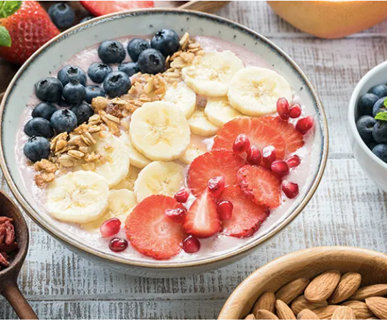

Buletin Sehat
Desa Pangan Aman
meningkatkan kemandirian dalam mencapai ketahanan pangan pada tingkat individu, meningkatkan partisipasi aktif masyarakat lokal dalam mencapai pangan yang aman dan bermutu, serta meningkatkan dan meningkatkan daya saing produk pangan lokal yang bermutu. Berikut gerakan keamanan pangan desa, yaitu: